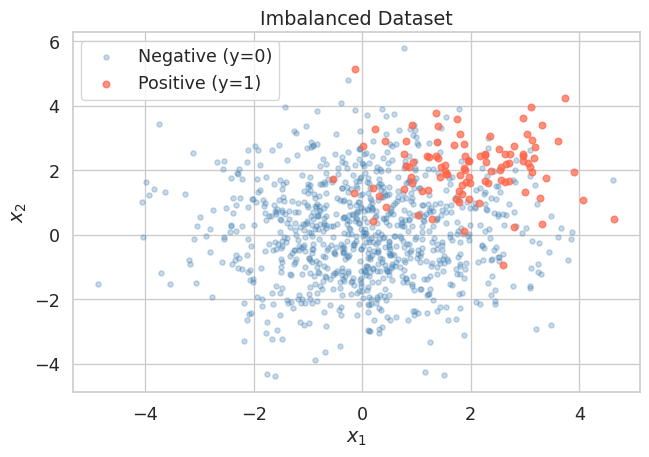
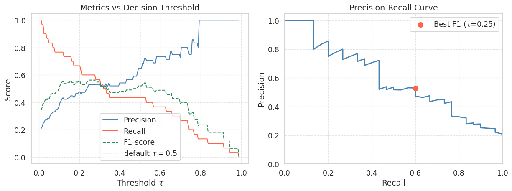
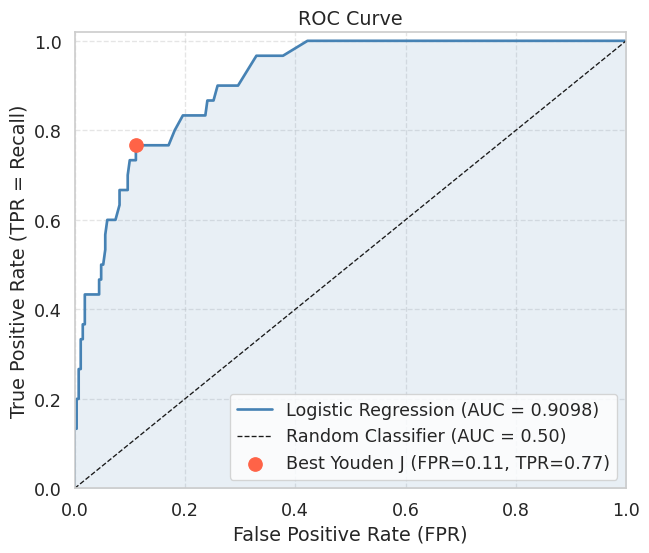

import numpy as np
import matplotlib.pyplot as plt
import seaborn as sns
from sklearn.linear_model import LogisticRegression
from sklearn.model_selection import train_test_split
sns.set_theme(style="whitegrid", font_scale=1.2)
np.random.seed(42)Lab 2-3. Classification Metrics and ROC Curves

Objectives
- Understand why accuracy alone is misleading when class distributions are skewed.
- Define and compute Precision, Recall, and F1-score from first principles.
- Sweep the decision threshold of a logistic regression model and observe how Precision and Recall trade off against each other.
- Construct the ROC curve manually by iterating over thresholds and plotting the True Positive Rate against the False Positive Rate.
- Compute the Area Under the ROC Curve (AUC) using the trapezoidal rule and interpret what the value means.
NoteWhy These Metrics Matter
In many real-world applications, the two classes are far from balanced. A fraud detection dataset might contain 99 % legitimate transactions and only 1 % fraudulent ones. A classifier that always predicts “legitimate” achieves 99 % accuracy while being completely useless. Precision, Recall, the PR curve, and the ROC curve are designed to expose exactly this kind of failure.
Background
The Confusion Matrix
For a binary classifier with a fixed decision threshold \(\tau\), every sample falls into one of four categories.
Given predicted label \(\hat{y} = \mathbf{1}[\hat{p} \geq \tau]\) and true label \(y \in \{0, 1\}\):
- True Positive (TP): \(y = 1\) and \(\hat{y} = 1\)
- False Positive (FP): \(y = 0\) and \(\hat{y} = 1\)
- True Negative (TN): \(y = 0\) and \(\hat{y} = 0\)
- False Negative (FN): \(y = 1\) and \(\hat{y} = 0\)
Precision, Recall, and F1
\[\text{Precision} = \frac{TP}{TP + FP}, \qquad \text{Recall} = \frac{TP}{TP + FN}\]
Precision answers: “Of all samples the model called positive, how many actually are?” Recall answers: “Of all actual positives, how many did the model find?”
The F1-score is their harmonic mean, which penalises large gaps between the two:
\[F_1 = \frac{2 \cdot \text{Precision} \cdot \text{Recall}}{\text{Precision} + \text{Recall}}\]
ROC Curve and AUC
The Receiver Operating Characteristic (ROC) curve is generated by sweeping \(\tau\) from 1 down to 0 and plotting
\[\text{TPR}(\tau) = \frac{TP(\tau)}{TP(\tau) + FN(\tau)}, \qquad \text{FPR}(\tau) = \frac{FP(\tau)}{FP(\tau) + TN(\tau)}\]
at each threshold. TPR is identical to Recall. FPR measures the fraction of actual negatives that are incorrectly called positive.
A random classifier produces a diagonal line from \((0, 0)\) to \((1, 1)\). A perfect classifier reaches the top-left corner \((0, 1)\). The Area Under the Curve (AUC) summarises this into a single number between 0 and 1.
\[\text{AUC} = \int_0^1 \text{TPR}\, d(\text{FPR})\]
AUC has a useful probabilistic interpretation: it equals the probability that the model assigns a higher score to a randomly chosen positive sample than to a randomly chosen negative sample.
0. Setup
1. Generating an Imbalanced Dataset
We simulate a binary classification problem where the positive class (class 1) makes up only about 10 % of the data. This mirrors realistic scenarios such as disease screening or anomaly detection.
np.random.seed(42)
n_neg = 900 # majority class (y = 0)
n_pos = 100 # minority class (y = 1)
# Negative class: centred at origin
X_neg = np.random.randn(n_neg, 2) * 1.5
# Positive class: shifted toward (2, 2) with smaller spread
X_pos = np.random.randn(n_pos, 2) * 1.0 + np.array([2.0, 2.0])
X = np.vstack([X_neg, X_pos])
y = np.concatenate([np.zeros(n_neg), np.ones(n_pos)])
print(f"Total samples : {len(y)}")
print(f"Positive class: {y.sum():.0f} ({100 * y.mean():.1f} %)")
print(f"Negative class: {(1 - y).sum():.0f} ({100 * (1 - y).mean():.1f} %)")Total samples : 1000
Positive class: 100 (10.0 %)
Negative class: 900 (90.0 %)Let us visualise the two classes to get a feel for the overlap.
fig, ax = plt.subplots(figsize=(7, 5))
ax.scatter(X[y == 0, 0], X[y == 0, 1],
alpha=0.3, s=15, color="steelblue", label="Negative (y=0)")
ax.scatter(X[y == 1, 0], X[y == 1, 1],
alpha=0.7, s=25, color="tomato", label="Positive (y=1)")
ax.set_title("Imbalanced Dataset")
ax.set_xlabel("$x_1$")
ax.set_ylabel("$x_2$")
ax.legend()
plt.tight_layout()
plt.show()
The positive class cluster is visible but substantially outnumbered. A naive classifier that always predicts the negative class would score 90 % accuracy, yet it would never identify a single true positive.
2. Training Logistic Regression
We split the data into a training set and a test set, then fit a logistic regression model. We intentionally hold off on picking any threshold — the model outputs raw probabilities \(\hat{p} = P(y=1 \mid x)\), and we will explore different thresholds ourselves in the next section.
X_train, X_test, y_train, y_test = train_test_split(
X, y, test_size=0.3, random_state=42, stratify=y
)
clf = LogisticRegression(max_iter=1000)
clf.fit(X_train, y_train)
# Predicted probabilities for the positive class on the test set
y_prob = clf.predict_proba(X_test)[:, 1] # shape: (n_test,)
print(f"Test set size : {len(y_test)}")
print(f"Positives in test: {y_test.sum():.0f}")
print(f"Score range : [{y_prob.min():.3f}, {y_prob.max():.3f}]")Test set size : 300
Positives in test: 30
Score range : [0.000, 0.989]
Tip
predict_proba vs predict
clf.predict(X_test) applies the default threshold of 0.5 internally and returns hard labels. clf.predict_proba(X_test) returns the raw probability estimates. We always want the raw probabilities when building PR or ROC curves, because the curves are constructed by sweeping the threshold.
3. The Danger of Accuracy on Imbalanced Data
Before examining proper metrics, let us first confirm that accuracy is deceptive here.
# Default threshold = 0.5
y_pred_default = (y_prob >= 0.5).astype(int)
tp = int(((y_pred_default == 1) & (y_test == 1)).sum())
fp = int(((y_pred_default == 1) & (y_test == 0)).sum())
tn = int(((y_pred_default == 0) & (y_test == 0)).sum())
fn = int(((y_pred_default == 0) & (y_test == 1)).sum())
accuracy = (tp + tn) / len(y_test)
precision = tp / (tp + fp) if (tp + fp) > 0 else 0.0
recall = tp / (tp + fn) if (tp + fn) > 0 else 0.0
f1 = (2 * precision * recall / (precision + recall)
if (precision + recall) > 0 else 0.0)
print(f"Threshold = 0.5")
print(f" TP={tp}, FP={fp}, TN={tn}, FN={fn}")
print(f" Accuracy : {accuracy:.4f}")
print(f" Precision : {precision:.4f}")
print(f" Recall : {recall:.4f}")
print(f" F1-score : {f1:.4f}")
# Naive baseline: always predict negative
accuracy_naive = (y_test == 0).mean()
print(f"\nNaive baseline accuracy (always predict 0): {accuracy_naive:.4f}")Threshold = 0.5
TP=13, FP=7, TN=263, FN=17
Accuracy : 0.9200
Precision : 0.6500
Recall : 0.4333
F1-score : 0.5200
Naive baseline accuracy (always predict 0): 0.9000The logistic regression model and the naive baseline are not far apart in accuracy. But Precision and Recall immediately reveal that the model is still missing roughly a quarter of the positives, which accuracy hides.
4. Sweeping the Decision Threshold
The default threshold \(\tau = 0.5\) is rarely optimal for imbalanced problems. We now iterate over a range of thresholds and compute Precision and Recall at each one to understand the full trade-off.
def compute_metrics_at_threshold(y_true, y_prob, threshold):
"""
Compute TP, FP, TN, FN, Precision, Recall, and F1
for a given decision threshold.
"""
y_pred = (y_prob >= threshold).astype(int)
tp = int(((y_pred == 1) & (y_true == 1)).sum())
fp = int(((y_pred == 1) & (y_true == 0)).sum())
tn = int(((y_pred == 0) & (y_true == 0)).sum())
fn = int(((y_pred == 0) & (y_true == 1)).sum())
precision = tp / (tp + fp) if (tp + fp) > 0 else 1.0
recall = tp / (tp + fn) if (tp + fn) > 0 else 0.0
f1 = (2 * precision * recall / (precision + recall)
if (precision + recall) > 0 else 0.0)
tpr = recall # TPR = Recall
fpr = fp / (fp + tn) if (fp + tn) > 0 else 0.0
return dict(tp=tp, fp=fp, tn=tn, fn=fn,
precision=precision, recall=recall,
f1=f1, tpr=tpr, fpr=fpr)thresholds = np.linspace(0.01, 0.99, 200)
results = [compute_metrics_at_threshold(y_test, y_prob, t) for t in thresholds]
precisions = np.array([r["precision"] for r in results])
recalls = np.array([r["recall"] for r in results])
f1_scores = np.array([r["f1"] for r in results])fig, axes = plt.subplots(1, 2, figsize=(13, 5))
# Left: Precision and Recall vs Threshold
axes[0].plot(thresholds, precisions, color="steelblue", lw=1.5, label="Precision")
axes[0].plot(thresholds, recalls, color="tomato", lw=1.5, label="Recall")
axes[0].plot(thresholds, f1_scores, color="seagreen", lw=1.5, label="F1-score", linestyle="--")
axes[0].axvline(0.5, color="gray", linestyle=":", lw=1, label="default $\\tau=0.5$")
axes[0].set_title("Metrics vs Decision Threshold")
axes[0].set_xlabel("Threshold $\\tau$")
axes[0].set_ylabel("Score")
axes[0].legend()
axes[0].grid(True, linestyle="--", alpha=0.5)
# Right: Precision-Recall curve
axes[1].plot(recalls, precisions, color="steelblue", lw=2)
axes[1].set_title("Precision-Recall Curve")
axes[1].set_xlabel("Recall")
axes[1].set_ylabel("Precision")
axes[1].set_xlim([0, 1])
axes[1].set_ylim([0, 1.05])
axes[1].grid(True, linestyle="--", alpha=0.5)
# Mark the point corresponding to the best F1
best_idx = np.argmax(f1_scores)
best_tau = thresholds[best_idx]
best_prec = precisions[best_idx]
best_rec = recalls[best_idx]
axes[1].scatter(best_rec, best_prec, color="tomato", s=80, zorder=5,
label=f"Best F1 ($\\tau$={best_tau:.2f})")
axes[1].legend()
plt.tight_layout()
plt.show()
print(f"Best threshold by F1 : {best_tau:.3f}")
print(f" Precision : {best_prec:.4f}")
print(f" Recall : {best_rec:.4f}")
print(f" F1-score : {f1_scores[best_idx]:.4f}")
Best threshold by F1 : 0.246
Precision : 0.5294
Recall : 0.6000
F1-score : 0.5625
WarningThe Precision-Recall Trade-off
As you lower \(\tau\), the model classifies more samples as positive. This recovers more true positives (Recall increases) but also picks up more false positives (Precision falls). There is no free lunch: improving one metric in isolation always comes at the cost of the other. The right operating point depends on the application. In medical screening you might accept lower Precision to maximise Recall and avoid missed diagnoses. In spam filtering you might prefer higher Precision to avoid flagging legitimate emails.
5. Building the ROC Curve Manually
The ROC curve is built from the same threshold sweep, but plots TPR (y-axis) against FPR (x-axis) instead of Precision against Recall. The key step is to sort thresholds so that the curve traces from the top-right corner \((1, 1)\) down to the bottom-left corner \((0, 0)\) as \(\tau\) increases from 0 to 1.
# Sort thresholds from high to low so the ROC curve goes from (0,0) to (1,1)
sorted_idx = np.argsort(thresholds)[::-1] # descending threshold order
tprs = np.array([results[i]["tpr"] for i in sorted_idx])
fprs = np.array([results[i]["fpr"] for i in sorted_idx])
# Manually prepend (0,0) and append (1,1) to close the curve
tprs_full = np.concatenate([[0.0], tprs, [1.0]])
fprs_full = np.concatenate([[0.0], fprs, [1.0]])# Compute AUC via the trapezoidal rule
auc = float(np.trapezoid(tprs_full, fprs_full))
fig, ax = plt.subplots(figsize=(7, 6))
ax.plot(fprs_full, tprs_full, color="steelblue", lw=2,
label=f"Logistic Regression (AUC = {auc:.4f})")
ax.fill_between(fprs_full, tprs_full, alpha=0.12, color="steelblue")
# Random classifier diagonal
ax.plot([0, 1], [0, 1], "k--", lw=1, label="Random Classifier (AUC = 0.50)")
# Mark the point that maximises TPR - FPR (Youden's J statistic)
j_stat = tprs - fprs
best_j = np.argmax(j_stat)
ax.scatter(fprs[best_j], tprs[best_j], color="tomato", s=100, zorder=5,
label=f"Best Youden J (FPR={fprs[best_j]:.2f}, TPR={tprs[best_j]:.2f})")
ax.set_title("ROC Curve")
ax.set_xlabel("False Positive Rate (FPR)")
ax.set_ylabel("True Positive Rate (TPR = Recall)")
ax.set_xlim([0, 1])
ax.set_ylim([0, 1.02])
ax.legend(loc="lower right")
ax.grid(True, linestyle="--", alpha=0.5)
plt.tight_layout()
plt.show()
print(f"AUC (manual trapezoidal rule): {auc:.4f}")
AUC (manual trapezoidal rule): 0.9098
NoteReading the ROC Curve
A curve that hugs the top-left corner indicates a good classifier: high TPR at low FPR. The diagonal from \((0,0)\) to \((1,1)\) represents a classifier that ranks positives and negatives randomly (AUC \(\approx\) 0.5). An AUC above 0.9 is generally considered excellent for most practical tasks.
Youden’s J statistic \(J = TPR - FPR\) selects the threshold that maximises the vertical distance between the ROC curve and the diagonal. It is a common choice when neither Precision nor Recall should dominate.
6. Verifying Against scikit-learn
It is good practice to verify your manual implementation against a trusted reference. The values should match to within floating-point tolerance.
from sklearn.metrics import roc_auc_score, roc_curve, average_precision_score
auc_sklearn = roc_auc_score(y_test, y_prob)
ap_sklearn = average_precision_score(y_test, y_prob)
fpr_sk, tpr_sk, _ = roc_curve(y_test, y_prob)
auc_trap_sk = float(np.trapezoid(tpr_sk, fpr_sk))
print(f"AUC (manual) : {auc:.4f}")
print(f"AUC (sklearn) : {auc_sklearn:.4f}")
print(f"AUC via trapz on sklearn curve: {auc_trap_sk:.4f}")
print(f"Average Precision (AP): {ap_sklearn:.4f}")
print(f"Match (manual vs sklearn): {np.isclose(auc, auc_sklearn, atol=1e-2)}")AUC (manual) : 0.9098
AUC (sklearn) : 0.9098
AUC via trapz on sklearn curve: 0.9098
Average Precision (AP): 0.5953
Match (manual vs sklearn): True
TipAUC vs Average Precision
AUC summarises the ROC curve and is robust to class imbalance in the sense that it measures rank quality over all thresholds. However, because it accounts for TN counts via FPR, a large negative class can inflate the AUC number.
Average Precision (AP), the area under the Precision-Recall curve, is often more informative under severe class imbalance because it focuses entirely on how well the model recovers the rare positive class. A random classifier achieves AP equal to the positive class prevalence (here \(\approx 0.10\)), rather than 0.50, making the gap to a real model easier to see.
Summary
- A model evaluated only on accuracy can look excellent on imbalanced data while being completely useless at detecting the minority class.
- Precision and Recall measure complementary qualities of the model. Lowering the decision threshold \(\tau\) increases Recall at the cost of Precision, and vice versa. The best trade-off depends on the application’s cost structure.
- The F1-score is the harmonic mean of Precision and Recall and is a convenient single-number summary when you need to balance both.
- The ROC curve is constructed by sweeping \(\tau\) from 1 to 0 and plotting TPR against FPR. Its area (AUC) measures the probability that the model ranks a random positive above a random negative.
- The AUC can be computed reliably from discrete threshold sweeps using the trapezoidal rule, and should match the value from
sklearn.metrics.roc_auc_score. - On heavily imbalanced datasets, prefer Average Precision over AUC because it is more sensitive to the model’s ability to rank the rare positive class.
References
- Fawcett, T. (2006). An introduction to ROC analysis. Pattern Recognition Letters, 27(8), 861-874.
- Saito, T., and Rehmsmeier, M. (2015). The precision-recall plot is more informative than the ROC plot when evaluating binary classifiers on imbalanced datasets. PLOS ONE, 10(3).